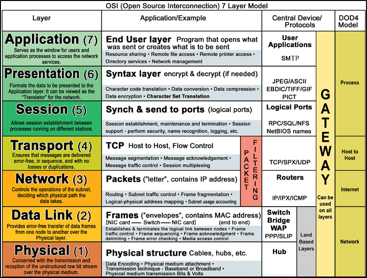

1. P = Please : Physical Layer. Eg: data cables, cat6 pluggis
2. D = Do : Data Layer. Eg: switching, MAC addresses
3. N = NOT : Network Layer. Eg: routing, IP addresses.
4. T = Throw : Transport Layer. Eg: TCP/UDP
5. S = Sausage : Session Layer. Eg: session managment.
6. P = Pizza : Presentation Layer. Eg: jpeg, wmv, mov, MEDIA.
7. A = Away : Application Layer. Eg: HTTP, SMTP, utilized application.
In the OSI moel, when data is recieved, it flows from the physical layer through to the application layer. When data is transmitted, it flows from the application layer through to the physical layer.
When troubleshooting, it is best to go from yhe physical layer through to the application layer.
Please Do Not Throw Sausage Pizza Away -@The Cyber Mentor
OR
All People Seem To Need Data Processing (from the bottom up)
